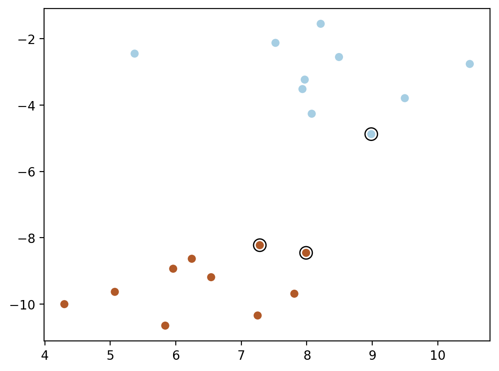
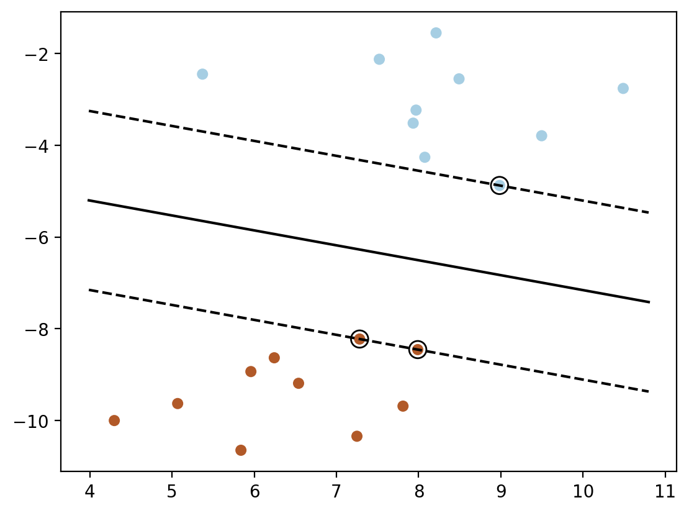
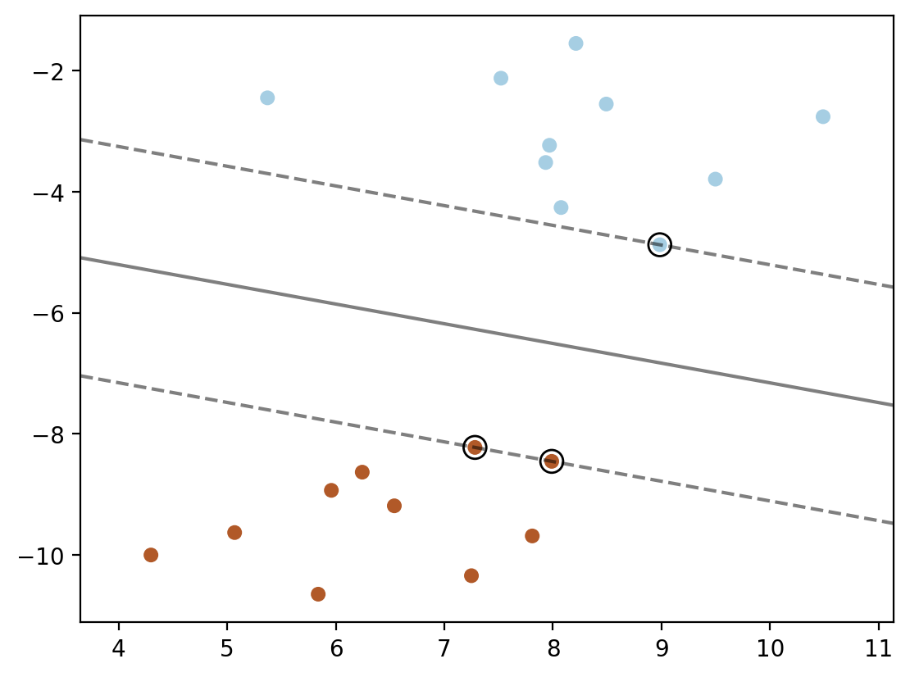
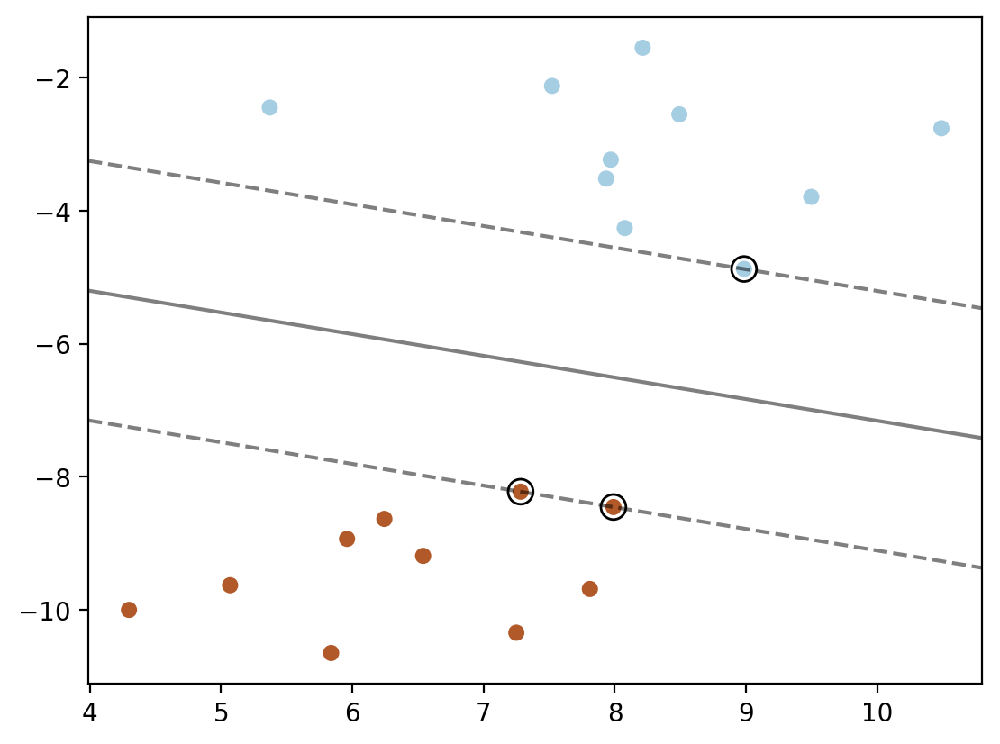

import numpy as np
import pandas as pd
import matplotlib.pyplot as plt
from matplotlib import cm
%matplotlib inline
%config InlineBackend.figure_format = 'retina'SVM with RBF kernel
SVM with RBF kernel
from sklearn import svm
from sklearn.datasets import make_blobs, make_classification
# Generate some random data for demonstration
X, y = make_blobs(n_samples=20, centers=2, random_state=6)plt.scatter(X[:, 0], X[:, 1], c=y, s=30, cmap=cm.Paired)
# Create an SVM model with an RBF kernel
model = svm.SVC(kernel='linear', C = 1e6)
# Fit the model to the data
model.fit(X, y)
# Access the alpha coefficients
alphas = np.abs(model.dual_coef_.ravel()) # Absolute values of dual coefficients
print(alphas, model.dual_coef_)[0.14522303 0.11368673 0.0315363 ] [[-0.14522303 0.11368673 0.0315363 ]]model.support_vectors_ array([[ 8.98426675, -4.87449712],
[ 7.98907212, -8.45336239],
[ 7.28183008, -8.2229685 ]])# Plot the support vectors
plt.scatter(model.support_vectors_[:, 0], model.support_vectors_[:, 1], s=100,
linewidth=1, facecolors='none', edgecolors='k')
plt.scatter(X[:, 0], X[:, 1], c=y, s=30, cmap=cm.Paired)
model.support_vectors_.shape, model.support_vectors_((3, 2),
array([[ 8.98426675, -4.87449712],
[ 7.98907212, -8.45336239],
[ 7.28183008, -8.2229685 ]]))model.dual_coef_.shape, model.dual_coef_, y[model.support_]((1, 3), array([[-0.14522303, 0.11368673, 0.0315363 ]]), array([0, 1, 1]))ys_minus1_and_plus1 = np.where(y[model.support_] == 0, -1, 1)
ys_minus1_and_plus1array([-1, 1, 1])w = np.dot(alphas * ys_minus1_and_plus1, model.support_vectors_)
print("w found using dual coefficients using our calculation:", w)
print("w found using model.coef_:", model.coef_)w found using dual coefficients using our calculation: [-0.16682897 -0.51246787]
w found using model.coef_: [[-0.16682897 -0.51246787]]# intercept
nsv = model.support_vectors_.shape[0]
b_sum = 0.0
for i in range(nsv):
b_sum += ys_minus1_and_plus1[i] - np.dot(w, model.support_vectors_[i])
b = b_sum / nsv
b_sklearn = model.intercept_
print("b found using dual coefficients using our calculation:", b)
print("b found using model.intercept_:", b_sklearn)b found using dual coefficients using our calculation: -1.9992140529976397
b found using model.intercept_: [-1.99921422]### Method 1: Contour plot
plt.scatter(X[:, 0], X[:, 1], c=y, s=30, cmap=cm.Paired)
ax = plt.gca()
xlim = ax.get_xlim()
ylim = ax.get_ylim()
xx = np.linspace(xlim[0], xlim[1], 30)
yy = np.linspace(ylim[0], ylim[1], 30)
YY, XX = np.meshgrid(yy, xx)
xy = np.vstack([XX.ravel(), YY.ravel()]).T
Z = np.dot(xy, w) + b
Z = Z.reshape(XX.shape)
plt.contour(XX, YY, Z, colors='k', levels=[-1, 0, 1], alpha=0.5,
linestyles=['--', '-', '--'])
plt.scatter(model.support_vectors_[:, 0], model.support_vectors_[:, 1], s=100,
linewidth=1, facecolors='none', edgecolors='k')
plt.show()### Method 2: plotting the decision function directly using wx + b = 0 and wx + b = 1 and wx + b = -1
plt.scatter(X[:, 0], X[:, 1], c=y, s=30, cmap=cm.Paired)
ax = plt.gca()
xlim = ax.get_xlim()
ylim = ax.get_ylim()
# decision line
# w1x1 + w2x2 + b = 0
# x2 = (-w1x1 - b) / w2
# x2 is y-axis and x1 is x-axis
w = model.coef_[0]
b = model.intercept_[0]
x1 = np.linspace(xlim[0], xlim[1], 30)
x2 = (-w[0] * x1 - b) / w[1]
plt.plot(x1, x2, 'k-')
# Now plot the margins
# w1x1 + w2x2 + b = 1
# x2 = (-w1x1 - b + 1) / w2
x2 = (-w[0] * x1 - b + 1) / w[1]
plt.plot(x1, x2, 'k--')
x2= (-w[0] * x1 - b - 1) / w[1]
plt.plot(x1, x2, 'k--')
plt.scatter(model.support_vectors_[:, 0], model.support_vectors_[:, 1], s=100,
linewidth=1, facecolors='none', edgecolors='k')
### Method 3: using sklearn's decision_function
plt.scatter(X[:, 0], X[:, 1], c=y, s=30, cmap=cm.Paired)
xlim = ax.get_xlim()
ylim = ax.get_ylim()
xx = np.linspace(xlim[0], xlim[1], 30)
yy = np.linspace(ylim[0], ylim[1], 30)
YY, XX = np.meshgrid(yy, xx)
xy = np.vstack([XX.ravel(), YY.ravel()]).T
Z = model.decision_function(xy).reshape(XX.shape)
plt.contour(XX, YY, Z, colors='k', levels=[-1, 0, 1], alpha=0.5,
linestyles=['--', '-', '--'])
plt.scatter(model.support_vectors_[:, 0], model.support_vectors_[:, 1], s=100,
linewidth=1, facecolors='none', edgecolors='k')

### Method 4: using dot product of phi(xj).phi(x_test) for each support vector point xj
plt.scatter(X[:, 0], X[:, 1], c=y, s=30, cmap=cm.Paired)
ax = plt.gca()
xlim = ax.get_xlim()
ylim = ax.get_ylim()
xx = np.linspace(xlim[0], xlim[1], 30)
yy = np.linspace(ylim[0], ylim[1], 30)
def phi_linear(x):
return x
YY, XX = np.meshgrid(yy, xx)
xy = np.vstack([XX.ravel(), YY.ravel()]).T
phi_linear_xy = phi_linear(xy)
phi_linear_support_vectors = phi_linear(model.support_vectors_)
alphas = model.dual_coef_
b = model.intercept_[0]
Z = np.ones(len(xy))
for index, phi_x_test in enumerate(phi_linear_xy):
decision = 0
for i in range(len(alphas[0])):
decision += alphas[0][i] * np.dot(phi_linear_support_vectors[i], phi_x_test)
decision += b
Z[index] = decision
plt.contour(XX, YY, Z.reshape(XX.shape), colors='k', levels=[-1, 0, 1], alpha=0.5,
linestyles=['--', '-', '--'])
plt.scatter(model.support_vectors_[:, 0], model.support_vectors_[:, 1], s=100,
linewidth=1, facecolors='none', edgecolors='k')

x_test = xy[0]
phi_linear_support_vectors[0]@x_test*alphas[0][0] + phi_linear_support_vectors[1]@x_test*alphas[0][1] + phi_linear_support_vectors[2]@x_test*alphas[0][2] + b3.025383870347727model.decision_function([x_test])array([3.02538387])model.decision_function(xy).shape(900,)Z.shape(900,)np.allclose(Z, model.decision_function(xy))True### Method 5: using K(x_sv, x_test) for each support vector point x_sv
def linear_kernel(x1, x2):
return np.dot(x1, x2)
plt.scatter(X[:, 0], X[:, 1], c=y, s=30, cmap=cm.Paired)
ax = plt.gca()
xlim = ax.get_xlim()
ylim = ax.get_ylim()
xx = np.linspace(xlim[0], xlim[1], 30)
yy = np.linspace(ylim[0], ylim[1], 30)
YY, XX = np.meshgrid(yy, xx)
xy = np.vstack([XX.ravel(), YY.ravel()]).T
Z = np.ones(len(xy))
for index, x_test in enumerate(xy):
decision = 0
for i in range(len(alphas[0])):
decision += alphas[0][i] * linear_kernel(model.support_vectors_[i], x_test)
decision += b
Z[index] = decision
plt.contour(XX, YY, Z.reshape(XX.shape), colors='k', levels=[-1, 0, 1], alpha=0.5,
linestyles=['--', '-', '--'])
plt.scatter(model.support_vectors_[:, 0], model.support_vectors_[:, 1], s=100,
linewidth=1, facecolors='none', edgecolors='k')